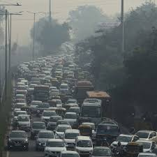
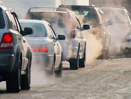

Air Pollution Caused By Transportation In Yangon
The 2019 Greenpeace report estimated that coal‑derived emissions alone could cause about 7,100 premature deaths per year in Myanmar if planned coal‑fired power plants go ahead. Furthermore, a report3 by Ohnmar from the University of Medicine 1, Yangon have found that exposure to dust, soot, lead and other pollutants reduces lung function, raises the prevalence of chronic bronchitis, and impairs cognitive or developmental health.

Transportation pollution
Meanwhile, doctors in Yangon suggest that vulnerable groups, such as children, the elderly, and those with predisposed lung or heart conditions, stay indoors during high pollution periods and use masks when outdoors.
Air pollution in Myanmar has impacts on the environmental, economic and social sectors. Firstly, polluted air degrades ecosystems, soils and water resources, especially when particulate matter settles, or when emissions come from coal‑plants that also affect nearby farmland and water supplies. Secondly, health impacts will result in lost productivity, higher healthcare costs and lower quality of life. Communities near polluting installations may lose livelihoods (e.g., farmers whose animals fall ill).
